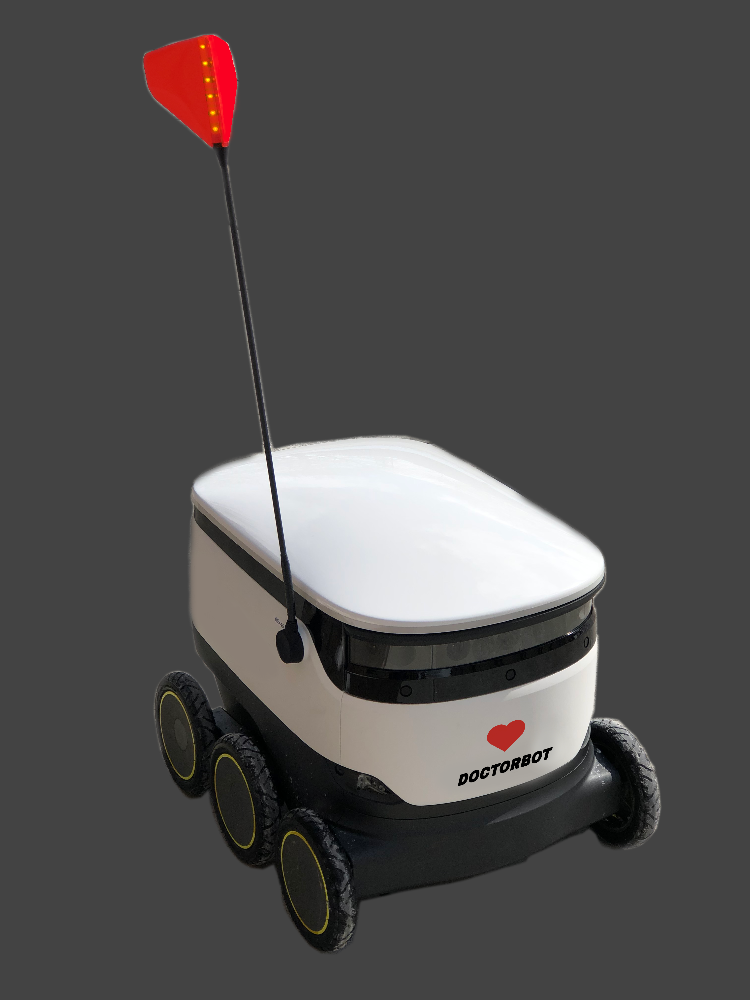

What Can A Starship Do?
Designed a "DoctorBot" to deliver over-the-counter medications across campus, emphasizing security and user accessibility. Contributions included sketches, presentations, research, and user surveys.
View Project
Embodied Shopping
Developed a smartphone-integrated shopping cart system to enhance in-store navigation and checkout efficiency. Roles included video narration, product sketches, observations, and user feedback surveys.
View Project
Fake Out
Conceptualized a gamified fitness tracker that integrates a virtual pet to motivate users to exercise. Targeted towards teens and young adults, with features promoting physical activity through interactive gameplay.
View Project